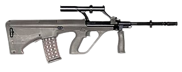

| Código | Descrisão | Preço R$ | Imagem | Vídeo |
|---|---|---|---|---|
| #0001 |
AK-47Oficialmente conhecida como a Avtomat Kalashnikova, 7,62 x 39 mm rifle de assalto desenvolvido na União Soviética. Fonte: |
R$ 20 mil | ||
| #0002 |
M1-GarandÉ um rifle semiautomático calibre .30-06 que foi o rifle de serviço padrão dos Estados Unidos durante a Segunda Guerra Mundial. Fonte: |
R$ 4.400 mil | ||
| #0003 |
M4A1É um 5,56 X 45mm OTAN , resfriado a ar, operado a gás , choque direto , alimentado com carregador , carabina de fogo selecionado. Fonte: |
R$ 10 mil | ||
| #0004 |
Desert EagleÉ uma pistola semiautomática operada a gás conhecida por carregar o .50 Action Express , o maior cartucho de fogo central de qualquer pistola autocarregável alimentada por carregador. Fonte: |
R$ 2.490 mil | ||
| #0005 |
Spas-12Uma espingarda de modo duplo, ajustável para operação semiautomática ou ação de bomba. Fonte: |
R$ 7.100 mil | ||
| #0006 |
UMP(Universale Maschinenpistole, alemão para "Pistola-metralhadora Universal") é uma submetralhadora desenvolvida e fabricada pela empresa alemã Heckler & Koch Calibre: 45ACP, 9X19 mm e 40 S&W. Fonte: |
R$ 1.190 mil | ||
| #0007 |
MossBerg 930Uma espingarda semiautomática calibre 12 projetada por OF Mossberg & Sons para uso por caçadores e atiradores de tiro ao alvo. Fonte: |
R$ 17.000 mil | ||
| #0008 |
Kar-98KUm rifle de ferrolho com câmara para o cartucho Mauser de 7,92 x 57 mm . Foi adotado em 21 de junho de 1935 como o rifle de serviço padrão pela Wehrmacht alemã. Fonte: |
R$ 3.890 mil | ||
| #0009 |
Steyr-AUGUm rifle de assalto bullpup austríaco com câmara para o cartucho intermediário da OTAN de 5,56 x 45 mm , projetado na década de 1960 por Steyr-Daimler-Puch. Fonte: |
R$ 2.040 mil |  | |
| #0010 |
M134-MinigunÉ um americano 7.62 x 51 milímetros NATO seis barril rotativo metralhadora com uma elevada taxa de incêndio ( 2.000 a 6.000 rotações por minuto ). Ele apresenta um conjunto de barril rotativo no estilo Gatling com uma fonte de alimentação externa, normalmente um motor elétrico. Fonte: |
R$ 100 mil |